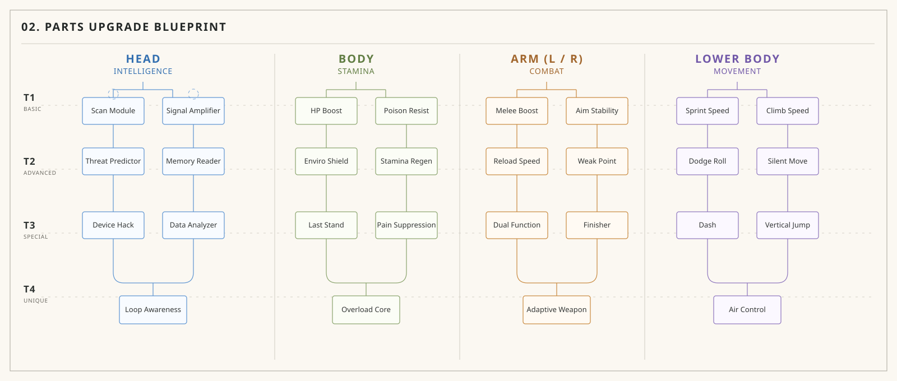

복귀 판단의 주체
Devour가 다가오면 LYRA는 더 깊이 들어갈지, 즉시 Capital로 돌아갈지 선택해야 한다. 이 판단이 생존, 실패, 회수 루프의 출발점이 된다.
이 페이지는 제작, 공유, PDF화까지 염두에 둔 최종 캐릭터 기준 문서다. 핵심 구조는 LYRA가 경험하고, PIP이 행동으로 흔적을 남기며, RELAY가 기록을 저장한 뒤 새로운 LYRA로 반복된다는 흐름이다.
| 구분 | LYRA | PIP | RELAY |
|---|---|---|---|
| 외형 | 인간 | 동물 | 기계 |
| 인식 | 자신 = 인간 | 단순 생물 | 도구 |
| 실제 | 반복되는 존재 | 행동 기억 매개체 | 기록 저장 장치 |
| 역할 | 경험 | 흔적 | 저장 |
| 전달 방식 | 감정 | 행동 | 데이터 |
Devour는 캐릭터를 외부 위험에 반응하게 만드는 핵심 환경 규칙이다. LYRA는 Devour 안에서 선택하고, PIP은 방향과 긴급도를 행동으로 전달하며, RELAY는 Devour의 타이밍과 위험 신호만 최소 정보로 남긴다.
Devour가 다가오면 LYRA는 더 깊이 들어갈지, 즉시 Capital로 돌아갈지 선택해야 한다. 이 판단이 생존, 실패, 회수 루프의 출발점이 된다.
PIP은 Devour의 방향을 응시, 반복 이동, SIGNAL 상태로 전달한다. UI 대신 행동이 경고가 되며, 플레이어는 PIP의 긴장도를 읽고 복귀 시점을 판단한다.
RELAY는 대량 데이터를 보내지 못한다. 대신 Devour의 방향, 접근 타이밍, 위험 신호만 압축해 PIP에게 넘기고, 실패 후에는 회수에 필요한 기록 일부를 남긴다.
LYRA는 자신이 인간이라고 믿는 반복 구조이며, 플레이어가 직접 살아가게 되는 경험의 중심이다.
PIP은 기억을 행동으로 남기는 존재이며, 언어 없이 과거의 선택을 현재에 다시 드러내는 장치다.
RELAY는 기억을 저장하지만 완전히 돌려주지 않는 구조이며, 반복을 유지하는 가장 정직한 기록 장치다.
LYRA는 플레이어가 살아가게 되는 감정과 선택의 통로다. 인간처럼 보이지만 실제로는 반복 구조의 시작점이다.
PIP은 설명 없이 남겨진 선택의 자취다. 귀여운 동물처럼 보이지만, 반복 행동으로 과거를 현재에 떠올리게 만든다.
RELAY는 사라지는 경험을 저장하고 일부만 이어 붙인다. 그 결과 루프는 유지되지만 완전한 복원은 일어나지 않는다.
LYRA의 경험은 사라지지 않고 PIP의 동선, 멈춤, 시선으로 남는다. 감정은 행동의 흔적으로 전환된다.
PIP이 남긴 비언어적 흔적은 RELAY에서 구조적 기록으로 저장된다. 직감은 데이터로 굳어진다.
기록 일부만이 다음 LYRA에게 건네지며 루프가 이어진다. 되돌아오는 것은 같은 존재가 아니라 부분적으로 이어지는 상태다.
LYRA는 자신이 인간이라고 믿는 반복 구조이며, 플레이어가 직접 살아가게 되는 존재다.
LYRA는 인간과 동일한 외형, 인간과 유사한 사고를 가지지만 동일한 개체는 아니다. 교체 가능하며 죽음은 종료가 아니라 전환이다.
LYRA는 인간 대신 외부 세계로 진입하고, 위험을 직접 감당하며, 이 구조 안에서 유일하게 적응 가능한 존재로 기능한다.
기억은 반복 속에서 왜곡되고 불완전하게 이어진다. 이 손실 구조가 플레이어가 체감하는 익숙함과 어긋남을 만든다.
16~18세의 현실적인 인상, 피로감 있는 눈, 실용적인 의상을 지향한다. SF 기호, 기계 디테일, 발광 요소는 금지한다.
PIP은 기억을 행동으로 남기는 존재이며, 언어 없이 반복 구조를 감각하게 만드는 장치다.
PIP은 동물처럼 보이는 생물이지만 실제로는 이전 LYRA들의 흔적과 사건의 잔재를 보존하는 기억 전달 장치다.
특정 위치 반복, 이유 없는 정지, 같은 경로 순환처럼 설명되지 않는 행동이 곧 메시지이자 기억의 형식이다.
처음에는 귀여운 동물로 보이지만, 점차 이상한 행동을 통해 기억을 알고 있는 존재이며 반복 구조의 핵심 장치라는 사실이 드러난다.
족제비 형태, 지능적인 눈, 자연스러운 색상을 기본으로 하되 시선이 오래 머무르고 설명되지 않는 행동이 느껴져야 한다.
RELAY는 기억을 저장하지만 완전하게 돌려주지 않는 구조이며, 반복의 연속성을 유지하는 핵심 장치다.
RELAY는 사건 기록을 저장하고 일부 기억만 복원한다. 동일성이 아니라 연속성을 유지하는 것이 이 장치의 목적이다.
기록은 항상 손실을 동반한다. 완전한 복원은 불가능하며, 이 손실 자체가 반복 구조의 핵심 규칙으로 남는다.
노출된 프레임, 중심 코어, 금속 구조를 통해 이 세계에서 드물게 겉과 속이 일치하는 존재로 보여야 한다.
PIP이 감각적이고 직관적인 흔적이라면, RELAY는 구조적이고 명확한 데이터다. 두 존재는 같은 진실을 다른 방식으로 드러낸다.
LYRA의 신체는 모듈형이며, 부위별 파츠를 교체하고 보정하면서 Outland에 적응한다. 성장은 레벨업보다 파츠 선택, 장착 슬롯, 시너지와 충돌을 관리하는 방식에 가깝다.
탐지, 예측, 정보 해석을 강화한다.
생존력, 저항, 소모 관리에 관여한다.
근접, 조준, 처치 흐름을 확장한다.
질주, 회피, 수직 이동을 담당한다.

LYRA의 행동 패턴은 생존, 탐색, 기억의 어긋남이 어떻게 플레이 경험으로 전환되는지 정리하는 영역이다.
위험 지역에서는 감정보다 생존과 이동 가능성을 먼저 계산한다. 불안, 망설임, 경계가 선택에 계속 개입한다.
상황을 감정적으로 받아들이지만, 기억의 결손 때문에 익숙한 장면에서 반 박자 늦거나 잘못된 확신을 보일 수 있다.
정확한 이유는 모르지만 이전 반복의 일부 흔적이 남은 장소나 선택지에 더 오래 머무르고, 설명되지 않는 기시감을 행동으로 드러낸다.
행동의 끝은 소멸처럼 보이지만 실제로는 구조가 다음 LYRA로 넘어가는 지점이다. 마지막 선택은 기록과 흔적을 남기는 사건으로 읽혀야 한다.
Devour 경고 이후 LYRA의 행동은 빨라지고 시야 확인이 잦아진다. 더 얻고 싶은 목표와 Capital로 돌아가야 하는 압박이 동시에 드러나야 한다.
PIP은 전투 유닛이 아니라 상황을 감지하고 행동으로 신호를 전달하는 간접 조력자다. 항상 LYRA에게 붙어 있다가 SIGNAL 상태에서만 분리되며, UI나 대사 없이 행동만으로 위험 방향, 긴장도, 타겟, 중요 위치를 플레이어가 스스로 읽게 만든다.
LYRA 목 뒤에 감긴 채 어깨 너머로 고개를 조금 드러낸다. 좌우 시선 이동, 후방 확인, 미세한 꼬리와 귀 반응처럼 작은 움직임만 유지한다.
몸이 긴장하고 목에서 약간 풀리며 특정 방향을 고정해서 바라본다. 빠른 시선 전환, 짧은 떨림, 방향 lock 유지가 핵심이다.
백팩 쪽으로 이동해 몸 대부분을 숨기고 고개만 드러낸다. 짧은 peek를 반복하다가 위험이 커지면 완전히 숨는다.
고개만 부분 노출한 채 특정 대상을 계속 추적한다. 적을 오래 응시하고 공격 직전에는 미세하게 움찔하지만 전체 움직임은 최소화된다.
목 뒤에서 이상 반응을 보인 뒤 LYRA 몸을 따라 이동하고, 몸에서 분리되어 주변을 제한적으로 움직이며 특정 위치에 고정된다. 반복 응시, 바닥 집중, 짧은 원형 이동, 긁기와 탐색 행동으로 여기라는 신호를 만든다.
상황이 끝나면 노출이 늘고 주변을 천천히 확인하면서 긴장을 푼다. 이후 백팩에서 어깨를 거쳐 다시 목 뒤로 이동해 안정된 리듬으로 돌아간다.
초기에는 Devour가 오는 방향을 응시하고, 경고가 강해지면 같은 방향을 반복 확인한다. 긴급 상태에서는 몸에서 분리되어 Capital 방향으로 이동한 뒤 멈춘다.
Devour로 LYRA의 탐험이 실패하면 PIP은 즉시 땅속에 굴을 파고 들어가 안전을 확보한다. 이후 남은 기록과 사망 위치 신호를 보존한 채 Capital 방향으로 복귀해 다음 LYRA가 회수 루프를 시작할 단서를 남긴다.
RELAY는 기록을 만드는 존재가 아니라 PIP이 남긴 기록을 받아 보관하고 다음 LYRA에게 이어주는 저장 / 전달 장치다. 감정이나 판단 없이 입력된 기록을 수신하고, 내부에 저장한 뒤 압축 과정에서 일부를 잃으며, 루프가 다시 시작될 때 남은 일부만 전달한다. 행동 패턴은 Passive(Idle) → Receive → Store → Compress → Transfer → Stable 순서로 정리된다.
LYRA 근처에 머물며 거의 반응하지 않는다. 코어는 아주 약하게만 빛나고, 시스템이 살아 있다는 정도만 보여준다.
PIP이 SIGNAL에 들어가거나 사건 기록이 발생하면 코어가 짧게 밝아진다. PIP 방향으로 미세하게 정렬되고 짧은 pulse가 발생한다.
수신한 기록을 내부에 보관한다. 코어는 안정화되고 외부 움직임은 거의 없어 플레이어가 크게 인지하지 못한다.
저장된 기록을 압축한다. 코어가 불규칙하게 깜빡이고, 이 과정에서 일부 정보가 사라지거나 왜곡된다.
새로운 LYRA가 생성되거나 루프가 재시작될 때 강한 pulse를 낸다. 저장된 기록 중 일부만 LYRA에게 전달된다.
전달이 끝나면 코어가 안정되고 다시 대기 상태로 돌아간다. 반복 구조가 유지되고 있다는 안정감만 남긴다.
RELAY는 Devour의 전체 환경 데이터를 전송하지 않는다. 방향, 접근 시간, 사망 위치처럼 다음 행동에 필요한 신호만 PIP에게 넘기고 나머지는 손실된다.
LYRA는 경험하고, PIP은 행동으로 흔적을 남기며, RELAY는 기억을 저장한다. 그리고 그 일부만이 다음 LYRA로 이어진다.
이 구조는 완전한 반복도 완전한 연속도 아니다. 손실을 포함한 일부만이 이어지고, 그 불완전함 자체가 세계의 진실로 남는다.
환경은 단순한 배경이 아니라 탐험 범위, 복귀 판단, 실패 루프를 동시에 만드는 시스템이다. 중심 개념은 Capital이 기준점이 되고, Outland가 선택을 요구하며, Devour가 시간과 방향으로 탐험을 제한한다는 흐름이다.
| 구분 | CAPITAL | OUTLAND | HAZARD |
|---|---|---|---|
| 기능 | 복귀 / 정비 | 탐색 / 회수 | 압박 / 소모 |
| 인상 | 보호 | 노출 | 위협 |
| 변화 | 안정적 | 가변적 | 점증적 |
| 플레이 구조 | 준비 | 행동 | 실패 유도 |
Devour는 단순한 재해가 아니라 탐험 범위, 리스크, 플레이 선택을 결정하는 세계 규칙이다. Devour 전에 Capital로 돌아와야 생존하며, 멀리 갈수록 복귀 시간과 실패 확률이 함께 증가한다.
모든 탐험은 중심에서 바깥으로 확장된다. Capital과의 거리는 곧 리스크이며, 안전은 복귀에 성공했을 때만 확정된다.
Devour 방향은 위험 방향이 되고, 반대편은 상대적으로 더 넓게 탐험 가능한 안전 방향이 된다. 이 구조가 매번 다른 루트를 만든다.
Relay는 Devour 방향과 타이밍 같은 저용량 신호만 보내고, PIP는 응시, 반복 이동, SIGNAL 상태로 Lyra와 플레이어에게 복귀 방향을 알린다.
복귀 실패 시 Lyra는 사망하고, 새로운 Lyra가 생성된다. PIP는 사망 위치를 신호로 남기며 다음 루프의 회수 목표를 만든다.
Capital은 정비와 정리가 가능한 유일한 내부 공간이다. 플레이어는 이곳에서 다음 행동을 준비한다.
Outland는 자원과 정보가 존재하지만, 동시에 가장 큰 리스크를 감수해야 하는 공간이다.
Hazard는 환경 전체에 개입하며 긴장과 소모를 누적시키는 구조적 위협이다.
내부 정비는 외부 탐색으로 이어진다. 준비는 곧 위험에 대한 선행 단계다.
외부로 나가는 순간 Hazard가 본격적으로 작동한다. 시야, 동선, 체력 관리가 동시에 흔들린다.
압박을 견디고 돌아오는 순간 Capital의 의미가 완성된다. 귀환은 단순 종료가 아니라 회수와 정리의 단계다.
Worldmap은 Capital, Outland, Hazard의 관계와 이동 경로를 한눈에 파악하는 환경 전체 지도다.
플레이어가 Capital, Outland, Hazard의 위치 관계와 주요 이동 동선을 읽는 기준 화면이다.
안전지대와 외부 위험 구역의 대비가 명확해야 하며, 어디로 갈수록 압박이 커지는지 직관적으로 보여야 한다.
Capital은 플레이어가 숨을 고르고, 정리하고, 다음 루프를 준비하는 내부 허브다.
플레이어가 외부와 대비되는 감각을 인식하게 만드는 기준 공간이다.
완전한 낙원은 아니지만, 외부와 비교했을 때 유일하게 정리 가능한 영역으로 느껴져야 한다.
Outland는 자원과 진실이 묻혀 있는 동시에, 살아남기 위해 가장 많은 비용을 요구하는 공간이다.
전투, 수집, 발견, 회수가 동시에 발생하는 핵심 플레이 공간이다.
시야와 동선, 사운드와 위험이 끊임없이 플레이어를 흔들어야 한다.
Hazard는 단일 개체가 아니라 외부 전체를 점유하는 복합 위협 구조다.
플레이어 자원을 감소시키고 선택을 조급하게 만드는 간접적 적대 요소다.
적이 없더라도 Hazard 자체만으로 긴장감이 유지되어야 한다.
환경의 성장은 공간이 직접 강해지는 것이 아니라, Capital의 정비 수준, Outland의 개척도, Hazard 대응 능력이 누적되며 다음 탐색의 선택지를 넓히는 방식으로 정리한다.
복귀 후 장비와 기록을 정리한다.
탐색 경로와 회수 자원이 확장된다.
위협의 패턴을 읽고 압박을 줄인다.
남긴 기록이 다음 진입의 기준이 된다.
모든 경로가 영구적으로 안전해지는 것은 아니다. 플레이어가 얻은 기록만 다음 준비 단계에 남고, 환경은 다시 위험한 상태로 갱신된다.
CAPITAL에서 준비하고, OUTLAND로 진입해 회수하며, HAZARD의 압박을 견딘 뒤 다시 CAPITAL로 복귀하는 환경 기반 생존 루프.
환경 루프는 안전지대에서 준비하고 외부에서 소모를 감수한 뒤 다시 복귀하는 순환을 뜻한다. 중요한 것은 전투 그 자체보다도, 언제 더 들어가고 언제 돌아올지를 판단하는 리듬이다.
이 워크스페이스는 새 탭 1 설정을 위한 기본 문서이다. 개요, 관계, 도감, 성장, 행동 패턴, 루프 구조를 자유롭게 편집할 수 있다.
이 영역은 새 워크스페이스 관계 설명용 기본 카드다.
필요한 구조에 맞게 텍스트를 수정한다.
새 워크스페이스의 핵심 흐름을 요약한다.
이 엔트리는 새 워크스페이스용 기본 도감 A다.
이 영역을 클릭해서 새 엔트리 설명을 수정한다.
레퍼런스 이미지와 함께 사용할 수 있는 기본 카드다.
이 엔트리는 새 워크스페이스용 기본 도감 B다.
이 영역을 클릭해서 새 엔트리 설명을 수정한다.
레퍼런스 이미지와 함께 사용할 수 있는 기본 카드다.
이 엔트리는 새 워크스페이스용 기본 도감 C다.
이 영역을 클릭해서 새 엔트리 설명을 수정한다.
레퍼런스 이미지와 함께 사용할 수 있는 기본 카드다.
새 워크스페이스의 성장, 강화, 누적 규칙을 정리하는 영역이다. 도감 항목이 어떤 방식으로 변화하고 다음 루프에 무엇이 남는지 간략하게 기록한다.
성장시킬 대상을 고른다.
필요한 자원이나 조건을 확보한다.
새 능력이나 상태를 반영한다.
다음 루프에 남길 요소를 정한다.
환경 워크스페이스에는 아직 행동 패턴 문서가 정의되지 않았다. 필요 시 환경 오브젝트나 위협의 반복 패턴을 이 영역에 정리할 수 있다.
새 탭의 루프 구조를 여기서 정리한다.